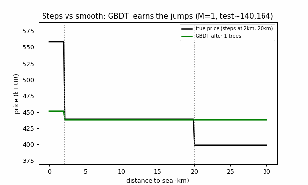
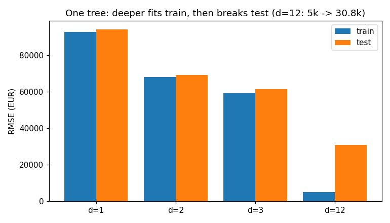
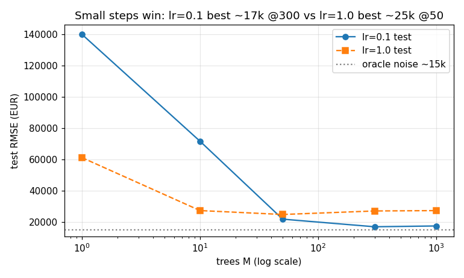
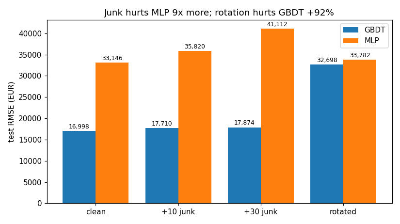

A reproducible benchmark you can rerun in 83 seconds — then publish from.
▶ Start the 5-minute guide · ✍ Take the quiz · 🎛 Try the playground · 🌐 Put this page on GitHub Pages
Problem: teams waste GPU budget putting neural networks on plain tables where they lose.
Result: on a housing table with sharp jumps, gradient boosting reaches €16,998 error (near the €15,000 noise limit) while a 3×256 neural net stalls at €33,236. Boosting ignores junk columns 9× better and learns jumps as steps. When columns are blended so no single column means anything, or on small smooth tables, the network catches up — and on live-market next-day prediction the plain average beats both.
So what: default to boosted trees for cross-sectional tables; reach for networks/foundation models for blended/smooth/small-i.i.d. cases; always include a mean baseline on time series. Everything below is generated by code — rerun it yourself.
Live demo of the core idea — watch steps emerge as trees are added:

You will know more than most interview candidates. Let's work this out in a step-by-step way to be sure we have the right answer.
Each row is one house. Columns: size (m²), rooms, distance to sea (km), age (years), garage (0/1), bathrooms. The last column is price — hidden for 1,000 houses; programs must guess it. Error = RMSE: square every miss, average, square-root. Smaller is better. Even the perfect rule scores ~€15,000 because equal houses sell for different prices (noise).
Example: “Is size < 132 m²?” Yes → guess €158k (average of yes-houses). No → guess €496k. Squared error falls from 255,000 to 41,000 (over 4/5 gone). The computer tries every column and every cut and keeps the best. On all 2,000 training houses the best first cut is size < 139.
Depth 1 → test error ~€94k. Depth 2 → ~€69k. Depth 3 → ~€61k. Depth 12 → train €5k but test €30.8k: it memorised noise in tiny 5-house boxes. Deep = memorises; shallow = generalises.

Start at the average (€387k). Leftover = truth − guess. Grow a depth-3 tree on leftovers, add only 1/10 of its guess. Repeat. Test error: 140k → 71k → 21.8k → 17.0k @300 → 17.5k @1000 (too many trees re-learn noise). Adding the whole guess (lr=1.0) drops fast (61k at once) but peaks worse (~24.9k) — small steps share the work.

1) Jumps. Sea <2 km (+€120k), sea >20 km (−€40k), age >50 (−€60k) are steps. Cuts draw steps; networks draw smooth slides.
2) Junk. Add 30 random columns: GBDT +€876, MLP +€7,966. First 20 trees use junk 0 times out of 140 splits; late trees use it 87% but move guesses only ~€52.
3) Meaning. Blend all columns (rotation): GBDT +92% worse, MLP flat. Trees need one column to mean one thing.

Real diabetes table (442 patients): MLP 55.5 beats GBDT 57.5. Cancer table: tie 97.5%. Live BTC/FX next-day returns: average beats both (markets are near-unpredictable at this horizon). Rule of thumb: tables with meaningful axes + jumps → trees; blended/smooth/small → networks; sequences → start with the mean.
Move the sliders. Price follows the true rule (no noise). Cross 2 km, 20 km, or 50 years and watch it jump — that jump is what trees get for free and networks must approximate.
Try: sea 1.9→2.1 (lose €120k), sea 19.9→20.1 (lose €40k), age 49→51 (lose €60k).
| depth | train | test |
|---|---|---|
| 1 | 92,648 | 93,976 |
| 2 | 67,831 | 69,143 |
| 3 | 58,983 | 61,251 |
| 12 | 5,050 | 30,847 |
| M | 1 | 10 | 50 | 300 | 1000 |
|---|---|---|---|---|---|
| RMSE | 140,164 | 71,708 | 21,875 | 16,998 | 17,516 |
lr=1.0: 61,251 → 27,363 → 24,859 → 27,110 → 27,341. Depth-8 @300: train 954, test 20,120.
| model | test RMSE |
|---|---|
| PlainGBDT @300 | 16,998 (best 16,984) |
| Torch MLP 3×256 (3 seeds) | 33,009 / 33,282 / 33,417 |
| Oracle noise | ~15,000 |
| setting | GBDT | MLP |
|---|---|---|
| clean | 16,998 | 33,146 |
| +10 junk | 17,710 | 35,820 |
| +30 junk | 17,874 | 41,112 |
| rotated | 32,698 | 33,782 |
| task | GBDT | MLP |
|---|---|---|
| Diabetes RMSE ↓ | 57.5 | 55.5 |
| Cancer acc ↑ | 97.54% | 97.54% |
| task | GBDT | MLP | mean |
|---|---|---|---|
| BTC daily | 0.0281 | 0.0243 | 0.0219 |
| EUR daily | 0.00366 | 0.00363 | 0.00299 |
Source: results/results.json (machine-generated). Reproduce: python3 src/experiments.py --fast.
Click an answer. Score at the end. All answers are in the guide above.
Score: 0 / 0
| you are… | use this repo to… |
|---|---|
| Student (first ML course) | run the playground + quiz, then --fast; explain depth vs boost in an exam with real numbers |
| Interview candidate | quote the 3 reasons with deltas (steps / 9× junk / +92% rotation) and the 2 counter-cases |
| Kaggle competitor | start from depth-3, lr≤0.1, early stopping; audit early junk-split rate before feature selection |
| Engineer (tables in prod) | copy Docker + seeds + JSONL artefacts; add mean baseline on any temporal task |
| Researcher (PhD chapter) | extend with kernel-smoothing sweep, FT-Transformer/TabM arm, OpenML-CC18 subset — protocol ready |
| Manager / CEO | read only the TL;DR: trees by default, networks for blends, mean for sequences |
Features: video-faithful synthetic generator · plain booster (<40-line core) · lr/depth/junk/rotation ablations · sklearn 5-fold suites · live BTC/FX tasks with offline fallback · VERIFY gate (fails CI on claim drift) · PNG + GIF assets generated from results · single-file interactive page.
git clone <your-fork> && cd tabular-gbdt-vs-nn-verify-2026 pip install -r requirements.txt python3 src/experiments.py --fast # ≈83 s, VERIFY: PASS python3 src/make_assets.py # rebuild docs/*.png + demo.gif python3 -m pytest tests/ -v # 3 passed docker compose run --rm bench-fast # same, containerised
Artefacts: results/results.json, results/SUMMARY.md. License: MIT — free for commercial use, attribution required.
This file is the website. One click each:
To publish it yourself: push this repo → Settings → Pages → Build and deployment → Deploy from a branch → branch main, folder /docs (recommended) → Save → wait ~1 minute. Root mirrors (preview.html, index.html, .nojekyll) mean / also works if Pages is set to source / (root).
Why did a green “Deployed” ever show a 404? A green build only proves something built — URLs mirror the repo path under the chosen source: source /docs serves docs/x.html at /x.html; source / serves it at /docs/x.html. Diagnose with three probes (/, /preview.html, /docs/preview.html): all-200 means done; /preview.html=404 + /docs/preview.html=200 means the source is root. Custom domain optional (HTTPS automatic).
No — conditional. Jumps + meaningful axes + junk → trees. Blends, smooth small tables → networks tie/win. Sequences → try the mean first.
One recipe (3×256, short schedule) is a baseline, not the frontier. The qualitative gap (GBDT ≈2× better here) is robust; the exact MLP number moves with tuning — that is why we report 3 seeds and keep the frontier (FT-Transformer/TabM/TabPFN) as explicit future work.
Yes — MIT. docs/demo.gif (31 KB) loops the sea-slice as trees grow. Rebuild with src/make_assets.py. For video, screen-record the GIF or playground (5–15 s, <5 MB) — GIF-above-the-fold converts best.
Expected — fonts/OS/anti-aliasing differ. Our PNGs are generated in-repo (matplotlib, fixed seeds); for the HTML page, screenshot in one fixed browser environment and commit the baseline (docs/screenshot.png).
Kernel-smoothing sweep, equal-budget tuning vs modern tabular nets, OpenML-CC18 multi-task suite, walk-forward finance with costs. The protocol and VERIFY gate are ready for each.